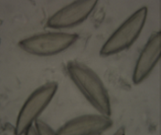
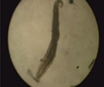

Title
- 동물별
- 분야별
-
Type 1 diabetes 의 주요 특징은 pancreatic beta cell의 자가면역 파괴로 인해 insulin 생산의 부족이며 AKITA mice, NOD mice가 대표적이고 비만(Obese)을 동반하지 않는 특징이 있습니다. 이 외에도 pancreatic beta cell을 손상시키는 streptozotocin을 이용하여 마우스에서 type 1 diabetes 동물모델을 만들기도 합니다. 하지만 chemical induced diabetes animal model은 rat이 더 일반적입니다. 더 자세한 내용은 참고자료를 활용하여 검토하시기 바랍니다.
Perianal tape test detecting Pinworm eggs: The sticky side of cellophane tape was attached to the perianal region mice and then it was pasted on microscopic slide. (eggs of Syphacia obvelata)
Adult pinworm from the caecal and colonic washings: Mouse found positive for pinworm by Perianal tape test were sacrificed and the caecum and colon were dissected out.
핀웜 (Pin Worm)은 설치류에서 기생충 감염증을 일으키는 병원체이며 감염의 확산 속도가 매우 빠르므로 SPF 시설의 유지를 위해서 신속하게 방재(Eradication)해야 합니다.
* Chawla S et al. Different Treatment Regiment for Eradication of Pinworm(syphaciaobvelata) Infection in Mice Colony. Journal of Animal Research. 2015;5(2):321-324.
- 어떤 종류의 당뇨 마우스가 있나요?
- Streptozotocin으로 당뇨마우스를 만들 수 있나요?
- The Jackson Laboratory. www.jax.org/strain
- King AJ. The use of animal models in diabetes research. Br J Pharmacol. 2012;166(3):877–894.
- Bylander JE, et al. Meprin Metalloprotease Deficiency Associated with Higher Mortality Rates and More Severe Diabetic Kidney Injury in Mice with STZ-Induced Type 1 Diabetes. J Diabetes Res. 2017;2017:9035038.
- Revsin Y, Rekers N, Louwe M, et al. Glucocorticoid Receptor Blockade Normalizes Hippocampal Alterations and Cognitive Impairment in Streptozotocin-Induced Type 1 Diabetes Mice. Neuropsychopharmacol. 2009;34:747–758.
- Graham ML, et al. The streptozotocin-induced diabetic nude mouse model: differences between animals from different sources. Comp Med. 2011;61(4): 356-360.
-
답변은 이렇습니다. 답변은 이렇습니다. 답변은 이렇습니다. 답변은 이렇습니다. 답변은 이렇습니다. 답변은 이렇습니다. 답변은 이렇습니다. 답변은 이렇습니다. 답변은 이렇습니다. 답변은 이렇습니다. 답변은 이렇습니다. 답변은 이렇습니다.
Print